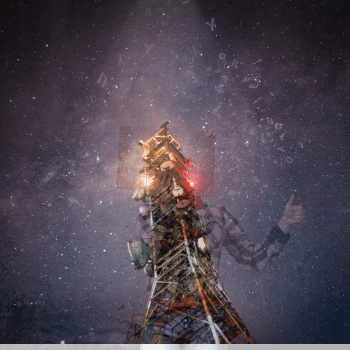

Wisdom Transmission
Wisdom Transmission explores the science of preserving, transferring, and embodying sacred knowledge across time, space, and consciousness. Rooted in Sufi traditions of lineage, silsila (spiritual chain), and prophetic inheritance, this framework examines how divine wisdom is safeguarded, transmitted, and actualized in individuals and communities.
At the Kashmir Sufi Science Center, under the Sufi Science Explorer Module, this structured study merges historical preservation with metaphysical transmission, offering seekers insights into how wisdom is passed, activated, and lived through sacred tradition.

Why This Matters?
✓
Preserving the Integrity of Sacred Knowledge
✓
Understanding the Spiritual Transmission & Activation
✓
Bridging Historical Lineages with Modern Seekers
✓